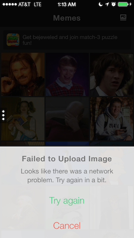
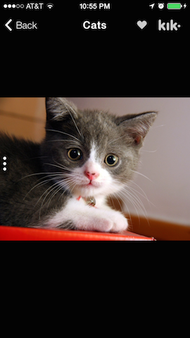

<div class="container">
	<div class="row">
		<div class="col-sm-9">
			<section>
				<p class="lead">The goal of App.js is to provide a robust starting point for mobile webapps, handling general scenarios, and maintaining compatiblity with other common JavaScript libraries.</p>
			</section>

			<section>
				<h1>Getting Started</h1>
				<p>Make sure to download the App.js bundle before proceeding. It'll serve as a starting point for building your app.</p>
				<p><a href="https://raw.github.com/kikinteractive/app/master/appjs-v2.zip" class="btn btn-success btn-lg">Download App.js bundle</a></p>
				<p>Unzip the bundle and open up <code>index.html</code></p>
				<p>Below is the standard format for App.js webpages:</p>
				<pre class="prettyprint lang-html">
&lt;!DOCTYPE html&gt;
&lt;html&gt;
  &lt;head&gt;
    &lt;title&gt;My App&lt;/title&gt;
    &lt;meta name="viewport" content="width=device-width,
                                   initial-scale=1.0,
                                   maximum-scale=1.0,
                                   user-scalable=no,
                                   minimal-ui"&gt;
    &lt;link rel="stylesheet" href="//cdn.kik.com/app/2.0.1/app.min.css"&gt;
    &lt;style&gt;
      /* put your styles here */
    &lt;/style&gt;
  &lt;/head&gt;
  &lt;body&gt;
    &lt;!-- put your pages here --&gt;
    &lt;script src="//zeptojs.com/zepto.min.js"&gt;&lt;/script&gt;
    &lt;script src="//cdn.kik.com/app/2.0.1/app.min.js"&gt;&lt;/script&gt;
    &lt;script&gt;
      /* put your javascript here */
    &lt;/script&gt;
  &lt;/body&gt;
&lt;/html&gt;
</pre>
				<p>Things to note:</p>
				<ul>
					<li><code>app.min.js</code> is the core module containing all library functionality.</li>
					<li><code>app.min.css</code> is the default stylesheet provided with App.js. It contains iOS/Android styles for all included widgets.</li>
					<li><code>zepto.min.js</code> is jQuery-like library focusing on being lightweight and mobile-friendly. It is not a dependency for App.js but still nice to have for writing concise, cross-platform code. Replace this with jQuery if you so desire.</li>
					<li>The meta viewport tag simply insures that the window is sized correctly on whatever device it runs on. This is important to get consistent sizing and scale across different platforms.</li>
					<li>The comment about "pages" is where your HTML page elements will go, as described in <a href="#ui">the UI section</a>.</li>
					<li>The comment about "javascript" is where your <a href="#pages-controllers">controllers</a> and <a href="#pages-navigation">navigation</a> code will go.</li>
					<li>The comment about "styles" is where your custom styles will go.</li>
				</ul>
				<p>Since App.js apps are fundamentally static all you have to do is put your code in an HTML file and open it in a browser to test.</p>
				<p>It is advised that you run your app <a href="https://developers.google.com/chrome-developer-tools/docs/mobile-emulation#emulate-device-viewports" target="_blank">in Chrome while simulating a mobile platform</a> that you're targeting. Don't forget to <a href="https://developers.google.com/chrome-developer-tools/docs/mobile-emulation#emulate-touch-events" target="_blank">turn on touch event emulation</a>.</p>

				<h3>Image Search example app</h3>
				<p>You can alternatively <a href="https://github.com/kikinteractive/image-search-example" target="_blank">fork our Image Search example</a> and start with an already existing product.</p>
			</section>

			<section>
				<h1 id="pages">Pages</h1>
				<p>App.js is built to serve makers of static single-page apps. This means that it keeps all page navigation within the session of the webpage, defining "pages" as DOM nodes that can be instantiated.</p>
				<p>Pages are HTML elements that have certain generic components like a topbar and content area. Note that while these components are completely optional the "app-page" format is the only requirement of your HTML.</p>
				<pre class="prettyprint lang-html">
&lt;div class="app-page" data-page="home"&gt;
  &lt;div class="app-topbar"&gt;&lt;/div&gt;
  &lt;div class="app-content"&gt;&lt;/div&gt;
&lt;/div&gt;
</pre>
				<p>The "app-page" must have a "data-page" attribute that denotes the name of the page. This name is used whenever any JavaScript code tries to load the page.</p>
				<pre class="prettyprint lang-js">
App.load('home');
</pre>
				<p>This single line of JavaScript instructs App.js to load the page named "home". Under the hood, App.js clones the HTML "app-page" element with that name and makes it visible to the user. This way we can create multiple instances of the same page and use it in different contexts.</p>

				<h3 id="pages-controllers">Controllers</h3>
				<p>Whenever a new page is being loaded using "App.load" a special function is called to prepare your HTML page app-page element. This allows you to hook up any dynamic aspects of your page prior to it being shown to the user. For example, buttons can be bound to perform whatever action they need to do.</p>
				<pre class="prettyprint lang-js">
/* in your javascript */
App.controller('home', function (page) {
  // this runs whenever a 'home' page is loaded
  // 'page' is the HTML app-page element
  $(page)
    .find('.app-button')
    .on('click', function () {
      console.log('button was clicked!');
    });
});
</pre>
				<p>The controller can also be a JavaScript so that you can have controllers that inherit from eachother.</p>
				<pre class="prettyprint lang-js">
function HomeController(page) {
  // this runs whenever a 'home' page is loaded
  this.foo = 'bar';
  this.print();
}
HomeController.prototype.print = function () {
  console.log(this.foo);
};
App.controller('home', HomeController);
</pre>
				<p>If you have described multiple pages in your HTML, you will want to create a controller for each of them so that they can be constructed properly whenever loaded.</p>

				<h4>Page Arguments</h4>
				<p>Controllers can have dynamic arguments so that you can construct a page slightly different depending on the input. For example, if I am creating a contact list app I will want to load a contact page for any given contact in my list. What we will do is describe a generic contact page with blank fields and fill them in depending on which contact the page is being loaded for.</p>
				<p>To load a page with special arguments simply add an JSON object to the "App.load" call and you'll be able to use that object in the populator accordingly.</p>
				<pre class="prettyprint lang-html">
&lt;!-- in your html --&gt;
&lt;div class="app-page" data-page="contact"&gt;
  &lt;div class="app-topbar"&gt;
    &lt;div class="app-title"&gt;Contact&lt;/div&gt;
  &lt;/div&gt;
  &lt;div class="app-content"&gt;
    &lt;div class="first-name"&gt;&lt;/div&gt;
    &lt;div class="last-name"&gt;&lt;/div&gt;
  &lt;/div&gt;
&lt;/div&gt;
</pre>
				<pre class="prettyprint lang-js">
/* in your javascript */
App.controller('contact', function (page, contact) {
  $(page).find('.first-name').text(contact.firstName);
  $(page).find('.last-name' ).text(contact.lastName );
});
</pre>
				<pre class="prettyprint lang-js">
/* somewhere else in javascript */
var contact = { firstName : 'Bruce' , lastName : 'Lee' };
App.load('contact', contact);
</pre>
				<p>In the second last line of code above, the "contact" object could have any first / last name and the controller would setup the page accordingly.</p>
				<p>These kinds of arguments coupled with Zepto or jQuery combine to effectively let you template your HTML.</p>

				<h4>Events</h4>
				<p>There are various events that App.js will fire on your page.</p>
				<ul>
					<li><b>"appLayout"</b>: Perhaps the most important event, this is caused by an orientation change, window resize, page placement in the DOM, or anything that could invalidate the layout of your page. Bind to this event and place any layout related code for your page in here.</li>
					<li><b>"appShow"</b>: Fired whenever the user navigates to this page. This may fire multiple times if the user navigates to another page and eventually returns.</li>
					<li><b>"appHide"</b>: Fired whenever the user navigates away from this page. Note that this doesn't necessarily mean that the page will be destroyed, for example in the case when the user navigates forward to another page and can possibly come back.</li>
					<li><b>"appBack"</b>: Fired when the user is navigating backward in the stack from this page.</li>
					<li><b>"appForward"</b>: Fired when the user is navigating forward in the stack from this page.</li>
					<li><b>"appBeforeBack"</b>: Fired when the user is about to navigate backward in the stack. This navigation can be cancelled by returning <code>false</code> in the handler for the event (similar to how <code>window.onbeforeunload</code> works).</li>
					<li><b>"appReady"</b>: This is effectively called the first time an <code>appShow</code> is called on the page. It has the added bonus on ensuring that <code>window.onload</code> has been called, making it useful for network-bound initialization code.</li>
					<li><b>"appDestroy"</b>: Fired when the instance of the page is about to be destroyed entirely. This normally occurs when the user has completed navigating backward from the page.</li>
				</ul>
				<p>To handle these events, bind to them in your controllers.</p>
				<pre class="prettyprint lang-js">
App.controller('home', function (page) {
  $(page).on('appShow', function () {
    console.log('the user can see it!');
  });
});
</pre>
				<p>Alternatively, all events can be bound as methods of the controller class.</p>
				<pre class="prettyprint lang-js">
function HomeController(page) {
  // stuff
}
HomeController.prototype.onShow = function () {
  console.log('the user can see it');
};
App.controller('home', HomeController);
</pre>
				<p>Upon destruction, it is important to unbind events that have been bound outside the scope of the page to allow the JavaScript garbage collector to do its job.</p>
				<pre class="prettyprint lang-js">
App.controller('home', function (page) {
  function doStuff() {
    // handle event
  }
  window.addEventListener('keypress', doStuff);
  $(page).on('appDestroy', function () {
    window.removeEventListener('keypress', doStuff);
  });
});
</pre>

				<h3 id="pages-navigation">Navigation stack</h3>
				<p>As discussed earlier, <code>App.load</code> makes clone of the chosen page, creates a controller for it, and then presents it to the user.</p>
				<pre class="prettyprint lang-js">
App.load('home');
</pre>
				<p>This can be called from anywhere in your code at any time. If a navigation is attempted while one is in progress the navigation will be queued to perform after the current one completes.</p>
				<p>Additionally, a callback can be provided to be run when the navigation is complete.</p>
				<pre class="prettyprint lang-js">
App.load('home', function () {
  // done!
});
</pre>
				<p>Because buttons often directly load pages there is a feature to allow this is a quick, succinct way.</p>
				<pre class="prettyprint lang-html">
&lt;!-- in your html --&gt;
&lt;div class="app-button" data-target="page2"&gt;Go to page 2&lt;/div&gt;
&lt;div class="app-button" data-target="contact" data-target-args='{"firstName":"Bruce","lastName":"Lee"}'&gt;Open contact&lt;/div&gt;
</pre>
				<p>When the first button is clicked <code>App.load('page2')</code> will automatically get called. The second button is similar but also provides page arguments to be pass along (<code>App.load('contact', { firstName : 'Bruce' , lastName : 'Lee' })</code>)</p>

				<h4>Back stack</h4>
				<p>As you navigate from page to page App.js mantains a history of the pages you have been to with the ability to navigate back to them. <code>App.back</code> is the conceptual reverse of <code>App.load</code> in that navigates back to the previous page load (destroying the current page when the navigation completes).</p>
				<pre class="prettyprint lang-js">
// load home
// load page2
App.back(function () {
  // back to home
  // page2's appDestroy event has been called
});
</pre>
				<p>If there is no prior page to navigate back to <code>App.back</code> will return <code>false</code>.</p>
				<p>As with the <code>data-target</code> feature, there is a conceptually reverse feature for <code>App.back</code>.</p>
				<pre class="prettyprint lang-html">
&lt;!-- in your html --&gt;
&lt;div class="app-button" data-back&gt;Go back&lt;/div&gt;
</pre>
				<p>When the above button is clicked <code>App.back()</code> will automatically get called.</p>
				<p>It is common to go back to a specific page rather than simply back a single page.</p>
				<pre class="prettyprint lang-js">
// load home
// load page2
// load page3
App.back('home', function () {
  // back to home
  // page2's and page3's appDestroy events have been called
});
</pre>
				<p>Another common thing to do with a back button is name it based on the previous page. App.js provides a convenience for automatically having the back button be named after the page it will lead to.</p>
				<pre class="prettyprint lang-html">
&lt;div class="app-button" data-back="true" data-autotitle&gt;&lt;/div&gt;
</pre>

				<h4>Pick a page</h4>
				<p>A common use-case for pages is to provide a way for the user to pick some content or data to be used on the calling page. This can be done using the following:</p>
				<pre class="prettyprint lang-js">
App.controller('selector', function (page, request) {
  // 'request' is data from the requestor
  // respond to the caller
	// will implicitely call App.back and destroy the page
	this.reply({ some: 'data' });
});
App.pick('selector', { some: 'data' }, function (data) {
	// 'data' is the reply data
	// do something with it
});
</pre>

				<h4>Transitions</h4>
				<p>By default App.js will attempt to transition between pages using whatever fits best with the platform that your app is running on. For example on iOS the titles of your pages will slide while fading out, simulating the native iOS transition style.</p>
				<p>There are many built in transitions and each call to "App.load" can specify which transition to use directly (overriding the defaults).</p>
				<pre class="prettyprint lang-js">
App.load('home', 'fade'); // fade between pages
</pre>
				<p>Transitions are provided by Swapper.js. <a class="external" href="https://github.com/kikinteractive/swapper">Go to the docs</a> for the list of available transitions.</p>
				<p>Additionally you can set the global default transition for all navigations.</p>
				<pre class="prettyprint lang-js">
App.setDefaultTransition('transition-name'); // global

// set per platform
App.setDefaultTransition({
  ios             : 'transition-name' , // iOS
  iosFallback     : 'transition-name' , // iOS &lt;5
  android         : 'transition-name' , // Android
  androidFallback : 'transition-name' , // Android &lt; 4
  fallback        : 'transition-name'   // non-iOS, non-Android
});
</pre>
				<p>Default transitions can also be set per-page.</p>
				<pre class="prettyprint lang-js">
App.controller('page2', function (page) {
	this.transition = 'fade';
});
</pre>

				<h4>Restore stack</h4>
				<p>Because App.js is aware of your navigation stack and how to construct pages, it also provides the ability to automatically restore the users session to where they were the last time it was closed. Enabling this feature requires this following idiom:</p>
				<pre class="prettyprint lang-js">
// in your apps main method
try {
  // try to restore previous session
  App.restore();
} catch (err) {
  // else start from scratch
  App.load('home');
}
</pre>
				<p>Below is an example of how to only restore the stack if the last session was in the last 5 minutes.</p>
				<pre class="prettyprint lang-js">
try {
  App.restore({ maxAge: 5*60*1000 });
} catch (err) {
  App.load('home');
}
</pre>
				<p>Note: <code>maxAge</code> is in milliseconds.</p>
				<p>Individual pages can prevent themselves from being ever restored (for example if they are modal).</p>
				<pre class="prettyprint lang-js">
App.controller('page2', function (page) {
	this.restorable = false;
});
</pre>
				<p><code>page2</code> and any page ahead of it in the stack will not be restored (but previous pages will).</p>

				<h4>Stack manipulation</h4>
				<p>While generally a bad practice, it is often necessary to manipulate the navigation stack under-the-hood without user interaction.</p>
				<p>Note that it is impossible to remove the currently visible page without calling <code>App.back</code> or <code>App.load</code> first.</p>
				<pre class="prettyprint lang-js">
// stack = [home, page2, page3]
App.removeFromStack(0,1); // remove home from stack
// stack = [page2, page3]
App.addToStack(1, ['home', 'page4']); // add two pages at index 1
// stack = [page2, home, page4, page3]
</pre>
			</section>

			<section>
				<h1 id="ui">UI Components</h1>
				<p>App.js pages are generally structured with a topbar and content area. The topbar contains the title and buttons (for navigation and other actions) while the content has the actual material for the page.</p>
				<pre class="prettyprint lang-html">
&lt;div class="app-page"&gt;
  &lt;div class="app-topbar"&gt;&lt;/div&gt;
  &lt;div class="app-content"&gt;&lt;/div&gt;
&lt;/div&gt;
</pre>
				<p>App.js comes with a bunch of UI components built-in and already styled. Almost all of these will end up in your <code>app-content</code>.</p>
				<p>Note that it is often convenient to have styles that are specific to a platform. For example in the demo at the top of this page the topbar is styled slightly different on iOS and Android. To accomodate this App.js adds classes to the body of the document denoting which platform it is running on. Using this class as a filtering selector can let you have separate styles for a single widget.</p>
				<pre class="prettyprint lang-css">
.my-widget {
  /* cross-platform styles */
}
.app-ios .my-widget {
  /* ios only styles */
}
.app-android .my-widget {
  /* android only styles */
}
</pre>

				<h3 id="ui-topbar">Topbar</h3>
				<p>Like many native mobile apps, the App.js topbar generally consists of several buttons and a title.</p>
<pre class="prettyprint lang-html">
&lt;div class="app-topbar"&gt;
  &lt;div class="app-title"&gt;Page title&lt;/div&gt;
&lt;/div&gt;
</pre>
				<p>Check out the <a href="#ui-buttons">buttons section</a> on how to add buttons to your topbar.</p>


				<h3 id="ui-content">Content</h3>
				<p>The <code>app-content</code> contains all of the contents of the page including buttons, lists, and inputs. While these widgets are useful, it is usually the case that the custom HTML structures of the app will go here.</p>
				<p>By default it automatically has scrolling managed for it. To turn off automatic scrolling add the attribute <code>data-no-scroll</code> to the content element.</p>

				<h3 id="ui-buttons">Buttons</h3>
				<p>Buttons are basic components of any app and App.js has several built-in conveniences for handling them. Any element with the class <code>app-button</code> will automatically be styled accordingly, as well being very responsive to touches with appropriate downstates when pressed.</p>
				<pre class="prettyprint lang-js">
&lt;div class="app-button"&gt;My button&lt;/div&gt;
</pre>
				<p>One of the more common placements for buttons is in the topbar.</p>
				<pre class="prettyprint lang-html">
&lt;div class="app-topbar"&gt;
  &lt;div class="app-button left" data-back&gt;Back&lt;/div&gt;
  &lt;div class="app-title"&gt;Page title&lt;/div&gt;
  &lt;div class="app-button right"&gt;Forward&lt;/div&gt;
&lt;/div&gt;
</pre>
				<p>As you might imagine, the "Back" button will show up on the left and the "Forward" on the right. You'll notice that the styles are significantly different than the button in the content area as in this context we expect a smaller button that is suitable for navigation and such.</p>

				<h3 id="ui-lists">Lists &amp; scrolling</h3>
				<p>Lists are useful for displaying bulk data or providing a set of options to choose from.</p>
				<pre class="prettyprint lang-html">
&lt;!-- in your app-content --&gt;
&lt;ul class="app-list"&gt;
  &lt;li&gt;Item 1&lt;/li&gt;
  &lt;li&gt;Item 2&lt;/li&gt;
  &lt;li&gt;Item 3&lt;/li&gt;
&lt;/ul&gt;
</pre>
				<p>Additionally list items can be buttons.</p>
				<pre class="prettyprint lang-html">
&lt;ul class="app-list"&gt;
  &lt;li class="app-button"&gt;Button item&lt;/li&gt;
&lt;/ul&gt;
</pre>
				<p>Lists often have labels to segment items into logical sections.</p>
				<pre class="prettyprint lang-html">
&lt;ul class="app-list"&gt;
  &lt;label&gt;Animals&lt;/label&gt;
  &lt;li&gt;Dogs&lt;/li&gt;
  &lt;li&gt;Cats&lt;/li&gt;
  &lt;label&gt;Fruits&lt;/label&gt;
  &lt;li&gt;Apples&lt;/li&gt;
  &lt;li&gt;Oranges&lt;/li&gt;
&lt;/ul&gt;
</pre>

				<h4>Infinite scroll</h4>
				<p>Lists often create the need for dynamically loaded content as the user scrolls. App.js can handle this for you.</p>
				<pre class="prettyprint lang-js">
App.infiniteScroll(listElement, function (next) {
	// dynamically fetch data
	var list = [];
	// add html elements to list
	next(list);
});
</pre>
				<p>Note that <code>listElement</code> is the HTML element that will have element dynamically inserted into.</p>
				<p>Having a loading element present while waiting for dynamic content to load is a common use-case.</p>
				<pre class="prettyprint lang-js">
App.infiniteScroll(listElement, { loading: loadingElem }, function (next) {
	next([ stuff ]);
});
</pre>
				<p>Note that <code>loadingElem</code> will be cloned and used at the bottom of the list while content is being fetched.</p>

				<h3 id="ui-forms">Inputs</h3>
				<p>App.js provides standard components to gather user input, from either HTML inputs or textareas, making it easy to construct forms.</p>
				<pre class="prettyprint lang-html">
&lt;!-- in your app-content --&gt;
&lt;input class="app-input"&gt;
&lt;input type="search" class="app-input"&gt; &lt;!-- will have search icon --&gt;
&lt;textarea class="app-input"&gt;&lt;/textarea&gt;
</pre>

				<h3 id="ui-sections">Sections</h3>
				<p>"Sections" is a concept in the App.js UI that lets you separate blocks of components into convenient.. well.. sections.</p>
				<p>Try this out in the content of your app:</p>
				<pre class="prettyprint lang-html">
&lt;!-- in your app-content --&gt;
&lt;div class="app-section"&gt;
  &lt;input class="app-input" placeholder="Subject"&gt;
  &lt;textarea class="app-input" placeholder="Message"&gt;&lt;/textarea&gt;
  &lt;div class="app-button"&gt;Send&lt;/div&gt;
&lt;/div&gt;
</pre>
				<p>You'll notice that the very same inputs that were described above are now in a rounded section all to themselves. Additionally, there is a margin around the section as well as appropriate borders. These features can be applied to any of the described widgets that go in the content area of your page.</p>
				<pre class="prettyprint lang-html">
&lt;ul class="app-list app-section"&gt;
  &lt;li&gt;Item 1&lt;/li&gt;
  &lt;li&gt;Item 2&lt;/li&gt;
  &lt;li&gt;Item 3&lt;/li&gt;
&lt;/ul&gt;
&lt;div class="app-section"&gt;
  &lt;div class="app-button"&gt;Send&lt;/div&gt;
&lt;/div&gt;
&lt;div class="app-section"&gt;
  &lt;input class="app-input"&gt;
&lt;/div&gt;
</pre>
				<p>Notice that you can put as many widgets as you like in a section and they will be handled accordingly.</p>

				<h3 id="ui-dialogs">Dialogs</h3>
				<p>App.js dialogs perform a similar duty as traditional modal dialogs and action sheets. They are modals that can present text (or HTML element) to the user with buttons to choose from to dismiss.</p>
				<div class="row">
					
					<div class="col-sm-8">
						<pre class="prettyprint lang-js">
App.dialog({
  title        : 'Network Error',
  text         : 'Looks like the connection is flaky. Try again in a bit'
  okButton     : 'Try Again',
  cancelButton : 'Cancel'
}, function (tryAgain) {
  if (tryAgain) {
    // try again
  }
});
</pre>
						<p>Another use-case is selecting from a list of options.</p>
						<pre class="prettyprint lang-js">
App.dialog({
  title        : 'Pick a Fruit',
  orangeButton : 'Orange',
  redButton    : 'Apple',
  greenButton  : 'Kiwi',
}, function (choice) {
  switch (choice) {
    case 'orange':
      // do something
      break;
    case 'red':
      // do something
      break;
    case 'green':
      // do something
      break;
  }
});
</pre>
						<p>Note that you can set any custom name to the button.</p>
					</div>
				</div>

				<h3 id="ui-photoviewer">PhotoViewer</h3>
				<p>PhotoViewer.js is customizable photo gallery for App.js that is trivial to setup. It is native-feeling with swipe gestures, pinch-to-zoom and more.</p>
				<div class="row">
					
					<div class="col-sm-8">
							<pre class="prettyprint lang-html">
&lt;!-- in your html --&gt;
&lt;script src="http://cdn.kik.com/photo-viewer/1/photo-viewer.js"&gt;&lt;/script&gt;

&lt;div class="app-page dark-page" data-page="viewer"&gt;
  &lt;div class="app-topbar"&gt;
    &lt;div class="left app-button" data-back data-autotitle&gt;&lt;/div&gt;
    &lt;div class="app-title"&gt;Viewer&lt;/div&gt;
  &lt;/div&gt;
  &lt;div class="app-content"&gt;&lt;/div&gt;
&lt;/div&gt;
</pre>
							<pre class="prettyprint lang-js">
// in your js
App.controller('viewer', function (page, data) {
  var photoViewer = new PhotoViewer(page, data.urls);
});
</pre>
							<pre class="prettyprint lang-js">
// to use the viewer
App.load('viewer', {
  urls: [
    'http://i.imgur.com/yDK68Ff.jpg',
    'http://i.imgur.com/rKIESYd.jpg',
    'http://i.imgur.com/OTaodxO.jpg'
  ]
});
</pre>
					</div>
				</div>
				<p>Read the <a href="https://github.com/kikinteractive/photo-viewer" target="_blank">PhotoViewer documentation</a> for more options and customizations.</p>
			</section>
		</div>

		<div class="col-sm-3 legend">
			<h3>Pages</h3>
			<div class="list-group">
				<a class="list-group-item" href="#pages-controllers">Controllers</a>
				<a class="list-group-item" href="#pages-navigation" >Navigation stack</a>
			</div>
			<h3>UI Components</h3>
			<div class="list-group">
				<a class="list-group-item" href="#ui-pages"      >Pages</a>
				<a class="list-group-item" href="#ui-topbar"     >Topbar</a>
				<a class="list-group-item" href="#ui-content"    >Content</a>
				<a class="list-group-item" href="#ui-buttons"    >Buttons</a>
				<a class="list-group-item" href="#ui-lists"      >Lists &amp; scrolling</a>
				<a class="list-group-item" href="#ui-forms"      >Inputs</a>
				<a class="list-group-item" href="#ui-sections"   >Sections</a>
				<a class="list-group-item" href="#ui-dialogs"    >Dialogs</a>
				<a class="list-group-item" href="#ui-photoviewer">PhotoViewer</a>
			</div>
		</div>
	</div>
</div>
